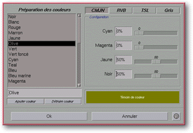

<!-- Documentation Xclamation (c)1994-2000 AXENE contact axene@axene.org>
<html>

<head>
<title>Préparation des couleurs</title>
</head>

<body BGCOLOR="#FFFFFF" BACKGROUND="Images/back.gif" TEXT="#000000">

<p ALIGN="right">  </p>

<p><br>
<br>
Cette boîte de dialogue permet de définir les couleurs qui seront utilisées dans
Xclamation (par exemple, lors de l'<a HREF="Box_Frame_Attributes.html#background_color_list">attribution d'une couleur à un
cadre</a> ou à une <a HREF="Box_Font.html#color_list">police de caractère</a>). Elle
associe des composantes à des noms de couleurs. <br>
<br>
</p>

<hr>

<p align="center"><br>
<br>
<small><i>Photo d'écran&nbsp;: Boîte de préparation des couleurs </i></small></p>

<p><br>
</p>

<hr>

<p><br>
</p>

<h3>Partie gauche de la boîte de dialogue&nbsp;:</h3>

<ul>
  <li><a NAME="color_list">La <b>liste des couleurs</b> affiche les couleurs déjà définies.
    Lorsque l'on sélectionne une couleur de la liste, sa définition en composantes apparaît
    à droite. Il est possible de sélectionner plusieurs couleurs grâce à l'utilisation de
    la touche Ctrl. Il en existe de prédéfinies dans les </a><a HREF="ConfigColor.html">fichiers
    de configuration</a>. <br>
    &nbsp;</li>
  <li><a NAME="edit_color_name">Le champ texte situé sous la liste permet de <b>modifier le
    nom de la couleur</b> sélectionnée. </a><br>
    &nbsp;</li>
  <li><a NAME="button_new">Le bouton <i>&quot;Ajouter couleur&quot;</i> permet de <b>créer
    une nouvelle couleur</b>. Celle-ci aura par défaut les mêmes caractéristiques que la
    couleur sélectionnée et le même nom augmenté d'un numéro. </a><br>
    &nbsp;</li>
  <li><a NAME="button_del">Le bouton <i>&quot;Détruire couleur&quot;</i> permet de <b>détruire
    une couleur</b>. Il est impossible de détruire une couleur utilisée dans l'application
    ou une couleur définie dans les </a><a HREF="ConfigColor.html">fichiers de configuration</a>
    avec le paramètre <a HREF="ConfigColor.html#lock">\LOCK</a>. <br>
    &nbsp;</li>
</ul>

<p><br>
</p>

<h3>Partie droite de la boîte de dialogue&nbsp;:</h3>

<ul>
  <a NAME="navbar">
  <li>Les quatres boutons <i>&quot;CMJN&quot;</i>, <i>&quot;RVB&quot;</i>, <i>&quot;TSL&quot;</i>
    et <i>&quot;Gris&quot;</i> permettent de faire changer le contenu de la section <i>&quot;Configuration&quot;</i>.
    Chacun de ces modes permet de définir la couleur sélectionnée. Si le bouton <i>&quot;Gris&quot;</i>
    est enfoncé, la couleur est convertie au niveau de gris correspondant. </a><br>
    &nbsp;<a NAME="setup"></li>
  <li>La section <i>&quot;Configuration&quot;</i> contient les composantes du mode chromatique
    sélectionné. </a><br>
    &nbsp;<a NAME="setup"><ul>
      <li></a><a HREF="#color_CMYK">mode chromatique CMJN</a> </li>
      <li><a HREF="#color_RGB">mode chromatique RVB</a> </li>
      <li><a HREF="#color_HSB">mode chromatique TSL</a> </li>
      <li><a HREF="#color_gray">niveau de gris</a> <br>
        &nbsp;</li>
    </ul>
  </li>
  <li><a NAME="color_preview">Un <b>témoin de couleur</b> affiche la couleur telle que
    définie par ses composantes. Ce rendu de couleur s'effectue au mieux des possibilités du
    moyen d'affichage, ce n'est donc pas exactement la même couleur que celle obtenue lors de
    l'impression. </a></li>
</ul>

<p><br>
</p>

<h3>Partie inférieure de la boîte de dialogue&nbsp;:</h3>

<ul>
  <li><a NAME="button_ok"><i>&quot;Ok&quot;</i> permet d'<b>accepter toutes les modifications</b>
    apportées à la liste des couleurs et ferme la boîte.</a><br>
    &nbsp;</li>
  <li><a NAME="button_cancel"><i>&quot;Annuler&quot;</i> <b>annule toutes les opérations</b>
    sur la liste des couleurs et ferme la boîte.</a></li>
</ul>

<p><br>
</p>

<hr>
<a NAME="color_CMYK">

<h2 align="center">Mode chromatique CMJN</h2>
</a>

<p><br>
Pour activer ce mode, il suffit de cliquer sur le bouton <i>&quot;CMJN&quot;</i>. La
couleur est alors spécifiée par les composantes <i>&quot;Cyan&quot;</i>, <i>&quot;Magenta&quot;</i>,
<i>&quot;Jaune&quot;</i> et <i>&quot;Noir&quot;</i>. </p>

<h3>Descriptif</h3>

<p>Couleurs primaires&nbsp;: 

<ul>
  <li>Cyan (Vert+Bleu)&nbsp;: couleur complémentaire du Rouge </li>
  <li>Magenta (Rouge+Bleu)&nbsp;: couleur complémentaire du Vert </li>
  <li>Jaune (Rouge+Vert)&nbsp;: couleur complémentaire du Bleu </li>
</ul>

<p>Ces couleurs primaires sont appelées 'soustractives' car elle doivent être retirées
pour produire du Blanc. </p>

<p>Le mode chromatique CMJN est celui utilisé par les imprimantes. </p>

<h3>Composer la couleur</h3>

<p>Les champs textes et les ascenseurs horizontaux permettent de <b>fixer l'incidence
d'une composante</b>. Ces valeurs indiquent le taux de la composante dans la couleur d'une
façon linéaire. Une valeur de 0(%) indique une absence de cette composante dans la
couleur, une valeur de 100(%) indique une incidence maximale de la composante dans la
couleur. </p>

<p>Lorque vous combinez les couleurs primaires C, M et J, le résultat théorique est
Noir. A l'impression, le mélange des encres produira une sorte de marron. Pour compenser
ce problème lors des impressions en quadrichromie, la composante N (Noir pur) est
ajoutée. Ajouter 30(%) de Noir revient à ajouter 30(%) de Cyan + 30(%) de Magenta +
30(%) de Jaune. </p>

<p><i><b>Remarque&nbsp;:</b> Xclamation optimise la couleur afin qu'elle utilise un
maximum de Noir pur, donc il est possible que les valeurs entrées soient modifiées
automatiquement lorsque vous affichez à nouveau cette boîte de dialogue.</i> </p>

<p><br>
</p>

<hr>
<a NAME="color_RGB">

<h2 align="center">Mode chromatique RVB</h2>
</a>

<p><br>
Pour activer ce mode, il suffit de cliquer sur le bouton <i>&quot;RVB&quot;</i>. La
couleur est alors spécifiée par les composantes <i>&quot;Rouge&quot;</i>, <i>&quot;Vert&quot;</i>
et <i>&quot;Bleu&quot;</i>. </p>

<h3>Descriptif</h3>

<p>Couleurs primaires&nbsp;: 

<ul>
  <li>Rouge (Magenta+Jaune)&nbsp;: couleur complémentaire du Cyan </li>
  <li>Vert (Cyan+Jaune)&nbsp;: couleur complémentaire du Magenta </li>
  <li>Bleu (Cyan+Magenta)&nbsp;: couleur complémentaire du Jaune </li>
</ul>

<p>Ces couleurs primaires sont appelées 'additives' car elle doivent être combinées
pour produire du Blanc. </p>

<p>Le mode chromatique RVB est celui utilisé par le moniteur. </p>

<h3>Composer la couleur</h3>

<p>Les champs textes et les ascenseurs horizontaux permettent de <b>fixer l'incidence
d'une composante</b>. Ces valeurs indiquent le taux de la composante dans la couleur d'une
façon linéaire. Une valeur de 0(%) indique une absence de cette composante dans la
couleur, une valeur de 100(%) indique une incidence maximale de la composante dans la
couleur. </p>

<p>Lorque vous combinez les couleurs primaires R, V et B, le résultat est Blanc.
L'absence de ces couleurs donne du Noir. </p>

<p><br>
</p>

<hr>
<a NAME="color_HSB">

<h2 align="center">Mode chromatique TSL</h2>
</a>

<p><br>
Pour activer ce mode, il suffit de cliquer sur le bouton <i>&quot;TSL&quot;</i>. La
couleur est alors spécifiée par sa <i>&quot;Teinte&quot;</i>, sa <i>&quot;Saturation&quot;</i>
et sa <i>&quot;Luminosité&quot;</i>. </p>

<h3>Descriptif</h3>

<p>Les modes CMJN et RVB ont un problème commun, il ne sont difficile à comprendre
intuitivement. Le mode TSL est plus proche de notre mode de pensée. </p>

<h3>Composer la couleur</h3>
<b>

<p>Teinte</b><br>
Les valeurs de <i>&quot;Teinte&quot;</i> sont comprises entre 0(°) et 360(°). Elles sont
équivalentes aux valeurs du cercle colorimétrique sur lequel 0(°) est identique à
360(°).<br>
Les valeurs des couleurs primaires&nbsp;:</p>
<div align="center"><center>

<table BGCOLOR="#000000" BORDER="0" CELLPADDING="1" WIDTH="50%">
  <tr>
    <td><table BORDER="0" WIDTH="100%" BGCOLOR="#FFFFFF" CELLPADDING="2" CELLSPACING="0">
      <tr BGCOLOR="#000000">
        <th><font COLOR="#AAAAAA" FACE="helvetica">&nbsp;Angle&nbsp;</font></th>
        <th COLSPAN="2"><font COLOR="#AAAAAA" FACE="helvetica">&nbsp;Couleur&nbsp;</font></th>
      </tr>
      <tr>
        <td ALIGN="center">0°</td>
        <td ALIGN="center">Rouge</td>
        <td BGCOLOR="#FF0000" ALIGN="center"><font COLOR="#FF0000">R</font></td>
      </tr>
      <tr BGCOLOR="#EEEEEE">
        <td ALIGN="center">60°</td>
        <td ALIGN="center">Jaune</td>
        <td BGCOLOR="#FFFF00" ALIGN="center"><font COLOR="#FFFF00">J</font></td>
      </tr>
      <tr>
        <td ALIGN="center">120°</td>
        <td ALIGN="center">Vert</td>
        <td BGCOLOR="#00FF00" ALIGN="center"><font COLOR="#00FF00">V</font></td>
      </tr>
      <tr BGCOLOR="#EEEEEE">
        <td ALIGN="center">180°</td>
        <td ALIGN="center">Cyan</td>
        <td BGCOLOR="#00FFFF" ALIGN="center"><font COLOR="#00FFFF">C</font></td>
      </tr>
      <tr>
        <td ALIGN="center">240°</td>
        <td ALIGN="center">Bleu</td>
        <td BGCOLOR="#0000FF" ALIGN="center"><font COLOR="#0000FF">B</font></td>
      </tr>
      <tr BGCOLOR="#EEEEEE">
        <td ALIGN="center">300°</td>
        <td ALIGN="center">&nbsp;Magenta&nbsp;</td>
        <td BGCOLOR="#FF00FF" ALIGN="center"><font COLOR="#FF00FF">M</font></td>
      </tr>
    </table>
    </td>
  </tr>
  <caption valign="bottom"><font SIZE="-1">Couleurs primaires</font></caption>
</table>
</center></div>

<p><b>Saturation</b><br>
La <i>&quot;Saturation&quot;</i> est liée à l'intensité d'une couleur. Elle est donnée
sous forme de pourcentage, allant de 0(%) (la teinte est inopérante) à 100(%) (la teinte
est pure). Plus cette valeur est haute, plus la teinte a une incidence dans la couleur
composée. </p>

<p><b>Luminosité</b><br>
La <i>&quot;Luminosité&quot;</i> est la quantité de Noir ajoutée à la couleur. Elle
est donnée sous forme de pourcentage, allant de 0(%) (Noir pur) à 100(%) (Blanc pur).
Plus la luminosité est élevée, plus la couleur est claire. Plus il y a de Noir
(luminosité basse), plus la couleur est sombre. </p>

<p><br>
</p>

<hr>
<a NAME="color_gray">

<h2 align="center">Niveau de gris</h2>
</a>

<p><br>
Pour activer ce mode, il suffit de cliquer sur le bouton <i>&quot;Gris&quot;</i>. La
couleur est alors spécifiée par son pourcentage de Blanc (de 0% (Noir) à 100% (Blanc)).
Lorsque l'on passe dans ce mode, la couleur sélectionnée est transformée en gris et
perd toute notion de teinte. </p>

<p><br>
</p>

<hr>

<p ALIGN="right"></p>
</body>
</html>
